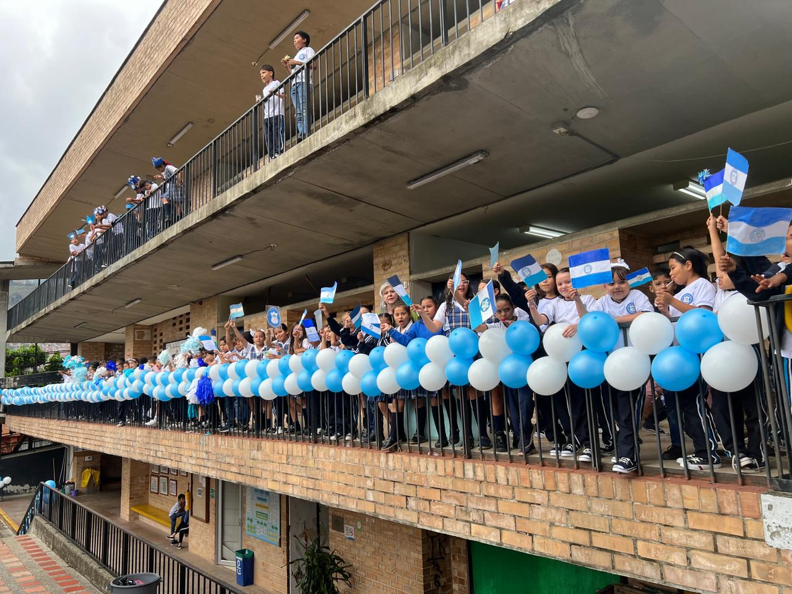

Marca
Alpina acompaña el esfuerzo diario desde una relación cercana con las familias y el bienestar.
ExplorarEjercicio académico · Propuesta por validar
Una alianza para acompañar cada vuelta
Una propuesta para unir el liderazgo nutricional de Alpina con la trayectoria de Jhon Edwar Tascón, e impulsar el bienestar cotidiano y el patinaje formativo.
Conoce la propuesta
01 / La idea
Unimos nutrición, disciplina y comunidad para que el deporte no se viva solo en la línea de meta.
Nota académica: Esta propuesta es un ejercicio académico. No existe compromiso comercial previo ni se afirma una alianza oficial con Alpina, Fedepatín o el deportista.
Alpina acompaña el esfuerzo diario desde una relación cercana con las familias y el bienestar.
ExplorarLa historia de Jhon Edwar Tascón conecta el alto rendimiento con el valor de insistir.
ExplorarMás oportunidades para acercar la nutrición, el movimiento y el patinaje a nuevas generaciones.
Explorar02 / Marca · Alpina
Una plataforma cercana, pensada para las rutinas reales de deportistas y familias colombianas.

 Nutrición que acompaña
Nutrición que acompañaAcompañar el esfuerzo diario de las familias colombianas con una mirada de bienestar.
Cercana, familiar y comprometida con el bienestar cotidiano, no solo con la competencia.
Una marca que acompaña el bienestar de deportistas y familias.
Familias de patinadores, clubes, colegios y jóvenes interesados en el deporte.
Por validar: coherencia con la comunicación real de Alpina y revisión profesional de los contenidos nutricionales.
03 / Embajador propuesto
Una trayectoria de velocidad, carácter y perseverancia que puede inspirar a nuevas generaciones.

Mundial · Asunción
Juegos Suramericanos · Santa Fe
Deporte de alto rendimiento
Su recorrido deportivo representa constancia, trabajo y apoyo familiar.
Los datos deportivos específicos deben confirmarse con fuentes oficiales antes de su uso público.
04 / Propósito
“Energía para avanzar” lleva el deporte más allá del podio: acompaña hábitos saludables y crea espacios donde niñas, niños y jóvenes puedan descubrir lo que son capaces de lograr.
La meta no es solo llegar primero. Es que más personas puedan empezar.

Conversaciones educativas con acompañamiento profesional, sin promesas de rendimiento no demostradas.
Acercar experiencias de patinaje a clubes, colegios y familias.
Celebrar la constancia, el trabajo en equipo y cada avance dentro y fuera de la pista.
05 / Activación propuesta
Tres frentes para convertir la propuesta en experiencias relevantes.
 Experiencia de marca
Experiencia de marcaEncuentros recreativos en clubes y colegios, con el atleta y una conversación sobre bienestar.
Historias digitales contadas desde la voz del atleta sobre preparación, disciplina y apoyo.
Contenido social · Video verticalRecursos educativos sobre el proceso deportivo de sus hijos, con respaldo profesional.
Guía descargable · Taller06 / Ecosistema de aliados
Aliados propuestos, sujetos a conversaciones y aprobaciones institucionales.
Logos y nombres se presentan con fines académicos y de identificación. No implican patrocinio, representación ni autorización de uso comercial.
07 / Pitch
Una invitación a impulsar a quienes avanzan cada día.
En el patinaje, una carrera se define por milésimas, pero el verdadero triunfo se construye durante años de disciplina y apoyo familiar. Por eso, hoy traemos una propuesta concreta: unir el liderazgo nutricional de Alpina con la trayectoria de Jhon Edwar Tascón bajo un mismo propósito: Energía para avanzar.
No estamos planteando un patrocinio tradicional centrado únicamente en el podio. Queremos conectar a Alpina con el bienestar cotidiano de las familias, convirtiendo la constancia de Jhon en un puente real de nutrición responsable y comunidad, empezando desde los clubes formativos.
¿Cómo lo hacemos realidad? A través de tres frentes de acción claros: realizaremos encuentros recreativos en clubes y colegios, crearemos historias digitales contadas desde la voz del propio atleta y entregaremos guías educativas con respaldo profesional para acompañar a los padres en el proceso deportivo de sus hijos.
Este proyecto académico ya tiene la estrategia lista para pasar del papel a la pista. El siguiente paso es sentarnos a validar los datos deportivos, los permisos y la afinidad de marca para estructurar juntos un primer piloto en un club local. Dejemos de imaginar el impacto y empecemos a impulsar a quienes avanzan cada día.
Propuesta académica. Verificar los datos y obtener permisos y avales antes de su uso público.
08 / Información académica
Responsable de la propuesta académica.